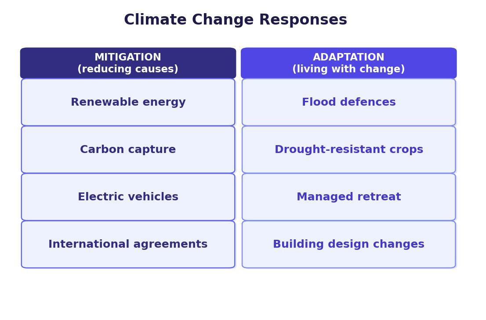

Climate Change and the Quaternary Period
Climate change is a long-term shift in global temperatures and weather patterns. The Earth’s climate has changed naturally for millions of years, cycling between cold glacial periods (ice ages) and warmer interglacial periods. We are currently in an interglacial.
The Quaternary period covers the last 2.5 million years. During this time, the Earth has experienced repeated cycles of glacial and interglacial periods, with cold phases lasting around 100,000 years and warmer phases lasting around 10,000 years.

Evidence for Climate Change
Scientists use several types of evidence to reconstruct past climates:
- Ice cores — drilled from ice sheets in Antarctica and Greenland, containing air bubbles trapped up to 800,000 years ago. The levels of oxygen, carbon dioxide and methane in these bubbles reveal past temperatures.
- Ocean sediments — layers of material on the sea floor contain remains of tiny organisms that show what temperatures were like when they were alive.
- Tree rings — wider rings indicate warm, wet growing seasons; narrow rings suggest cold, dry conditions.
- Pollen analysis — pollen preserved in peat bogs and lake sediments reveals which plants grew in the past, indicating the climate at the time.
- Modern evidence — sea level rise, retreating glaciers, increasing sea temperatures, more frequent extreme weather events and increased wildfire activity all indicate current warming.
Natural Causes of Climate Change
Four natural factors have driven climate change throughout Earth’s history:
Major volcanic eruptions eject dust, ash and sulphuric acid into the upper atmosphere. This material is spread around the world by high-altitude winds and acts like a blanket, blocking and reflecting sunlight back into space. This causes a global cooling effect that can last for several years. However, volcanoes also release carbon dioxide (a greenhouse gas), which over much longer time periods contributes to warming. The cooling effect of a single large eruption is more immediate and dramatic than the warming from its CO₂ emissions.
The Earth’s orbit around the sun is not a perfect circle — it is elliptical, and this shape changes over a 100,000-year cycle. When the orbit is more elongated, the Earth is further from the sun for part of its orbit, receiving less radiation and cooling down. The Earth’s axial tilt also changes between 21.5° and 24.5° over a 41,000-year cycle, altering how much sunlight the poles receive. Finally, the Earth wobbles on its axis in a 20,000-year cycle (like a spinning top), which changes the timing of seasons. When all three factors combine to reduce solar radiation, a glacial period can begin.
Sunspots are dark patches on the sun’s surface. A “spotty” sun produces more radiation, warming the Earth. Fewer sunspots mean less solar output and a slight cooling effect. The sun has had fewer sunspots over the last 50 years, which should produce mild cooling — yet the Earth has continued to warm, suggesting something else (human activity) is having a much larger effect.
When ice sheets form, their white surface reflects sunlight back into space rather than absorbing it as heat. This keeps the Earth cool even if other conditions favour warming, and is one reason why glacial periods last so long. Conversely, when ice melts, the darker land or ocean surface absorbs more heat, accelerating warming further. This is known as the albedo effect.
Human Causes of Climate Change
While natural climate change has occurred for millions of years, human activity since the Industrial Revolution (around 1800) has dramatically accelerated warming. This is called the enhanced greenhouse effect.
The Greenhouse Effect
The greenhouse effect is a natural process. The sun’s energy (ultraviolet radiation) passes through the atmosphere and warms the Earth’s surface. The surface gives off heat (infrared radiation), but greenhouse gases — including carbon dioxide (CO₂), methane (CH₄) and nitrous oxide (N₂O) — trap some of this heat, preventing it from escaping into space. Without this natural effect, the Earth would be about 33°C colder. The problem is that human activities are adding extra greenhouse gases, trapping more heat than the natural system would.
Three Main Human Causes
- Burning fossil fuels — coal, oil and gas are burned for electricity generation, transport (petrol and diesel) and home heating/cooking. This releases carbon dioxide that was stored underground for millions of years back into the atmosphere.
- Agriculture — large-scale cattle farming produces excessive methane from cattle digestion. Rice paddies also release methane through the decay of organic matter in waterlogged fields.
- Deforestation — cutting down trees (especially tropical rainforests) for farming and urban development removes the trees that absorb CO₂. When trees are burned through slash and burn, the carbon they stored is released directly into the atmosphere.
Population growth and rising wealth make the problem worse. More people means more fossil fuel use, more agriculture and more deforestation. As countries become wealthier, people buy more cars, devices and meat — all of which increase greenhouse gas emissions.
Consequences of Climate Change
Effects on the UK
- Sea level rise and coastal flooding threaten low-lying communities, especially on the east and south-east coasts.
- More frequent extreme weather events — heatwaves, droughts and flooding.
- More heat-related deaths, especially among the elderly.
- Loss of habitats as species cannot adapt fast enough to changing temperatures.
- On the positive side: ability to grow new crops (such as grapes and olives), less heating needed in homes, fewer cold-related deaths, and a longer summer tourism season.
Worldwide Effects
- Sub-Saharan Africa will face more severe drought, making food and water even harder to find.
- Polar bears and seals face extinction as Arctic sea ice shrinks.
- Coral reef bleaching is increasing as ocean temperatures and acidity rise, especially in the Great Barrier Reef.
- Ski resorts in the European Alps may close due to lack of snow.
- North and Central American maize production could fall by 12%, raising cereal prices.
- Global fishing levels could fall by 40%, affecting the diets of 40 million people.
- 70% of Asia will face increased flood risk.
Responding to Climate Change
There are two approaches to dealing with climate change: mitigation (reducing the causes) and adaptation (living with the effects).
Mitigation Strategies
- Alternative energy — replacing fossil fuels with renewable sources such as wind, solar and hydroelectric power to reduce CO₂ emissions.
- Carbon capture and storage (CCS) — capturing CO₂ from power stations and pumping it underground into old coal mines and oil wells, where it forms compounds with the surrounding rock. CCS could store 10–55% of global CO₂ emissions by 2100, saving the UK £30 billion in climate target costs. However, it allows continued fossil fuel burning and the stored CO₂ could eventually leak.
- Afforestation — planting new forests to absorb CO₂ from the atmosphere through photosynthesis.
- International agreements — countries have come together to agree on reducing emissions:
- 2005 Kyoto Protocol — the first legally binding agreement, where 70 countries agreed to cut CO₂ by 5.2% by 2012 (though the USA and Australia did not sign).
- 2009 Copenhagen Accord — extended Kyoto targets and raised money for LICs to tackle their emissions.
- 2015 Paris Agreement — 196 countries signed a universal agreement to reduce CO₂, limit temperature rise to no more than 2°C, review progress every 5 years, and spend US$10 billion on clean energy.
Adaptation Strategies
- Changing agriculture — moving crop production to areas with suitable new climates (e.g. growing crops further north), growing drought-resistant crops that need less water, and irrigating farmland to replace declining rainfall.
- Managing water supply — reducing personal water use (shorter showers, fixing leaks, water-efficient appliances) and investing in desalination to produce fresh water from the sea (London already provides 400,000 homes with desalinated Thames water, though the process uses a lot of energy).
- Defending against sea level rise — building flood defences such as sea walls (Blackpool) and flood barriers (Thames Barrier in London, which currently gives a 1-in-1,000-year flood rate, though this may reduce to 1-in-100 as sea levels continue to rise). Some communities may ultimately need to relocate inland.
The key difference: mitigation tries to stop climate change from getting worse (reducing the cause), while adaptation accepts that some change will happen and focuses on living with the effects. Both are needed because even if all emissions stopped today, the climate would continue changing for decades.